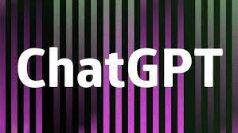

Setting of AI :
“Harmonised standards” play an important role in EU legislation by making what are at times vague essential requirements into concrete technical requirements. For more information about how these standards fit into the AI Act (AIA), see the following report. It is these standards that will specify, for example, what the “suitable risk management measures” mentioned in the AIA include. They are standards specifically designed to support EU legislation, and adhering to them carries a “presumption of conformity” with the essential requirements.[1] Not all standards developed in the EU are harmonised standards, only those intended to support EU legislation.

AI education:
Artificial Intelligence (AI) has the potential to address some of the biggest challenges in education today, innovate teaching and learning practices, and accelerate progress towards SDG 4. However, rapid technological developments inevitably bring multiple risks and challenges, which have so far outpaced policy debates and regulatory frameworks. UNESCO is committed to supporting Member States to harness the potential of AI technologies for achieving the Education 2030 Agenda, while ensuring that its application in educational contexts is guided by the core principles of inclusion and equity.UNESCO’s mandate calls inherently for a human-centred approach to AI. It aims to shift the conversation to include AI’s role in addressing current inequalities regarding access to knowledge, research and the diversity of cultural expressions and to ensure AI does not widen the technological divides within and between countries. The promise of “AI for all” must be that everyone can take advantage of the technological revolution under way and access its fruits, notably in terms of innovation and knowledge.
AI writer :
AI Writer is a revolutionary new type of software that uses artificial intelligence to write high-quality content. It works by analyzing millions of documents and pieces of user-generated content, identifying patterns and trends, and using this information to create unique and engaging content.AI writers can generate human-like text content with the power of AI technology. AI writing tools are excellent for businesses that conduct content marketing.
AI art :
AI art refers to art generated with the assistance of artificial intelligence. AI is a field of computer science that focuses on building machines that mimic human intelligence or even simulate the human brain through a set of algorithms.
ChatGPT was launched on November 30, 2022, by San Francisco–based OpenAI, the creator of DALL·E 2 and Whisper AI. The service was launched as initially free to the public, with plans to monetize the service later. By December 4, 2022, ChatGPT already had over one million users.
The language model can answer questions, and assist you with tasks such as composing emails, essays, and code. Usage is currently open to public free of charge because ChatGPT is in its research and feedback-collection phase. As of Feb. 1, there is also a paid subscription version called ChatGPT Plus.
AI translation:
AI translation is a machine translation process based on complex deep learning algorithms. Using intelligent behavior, it can reason and understand a source text and generate another in a different language.